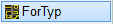
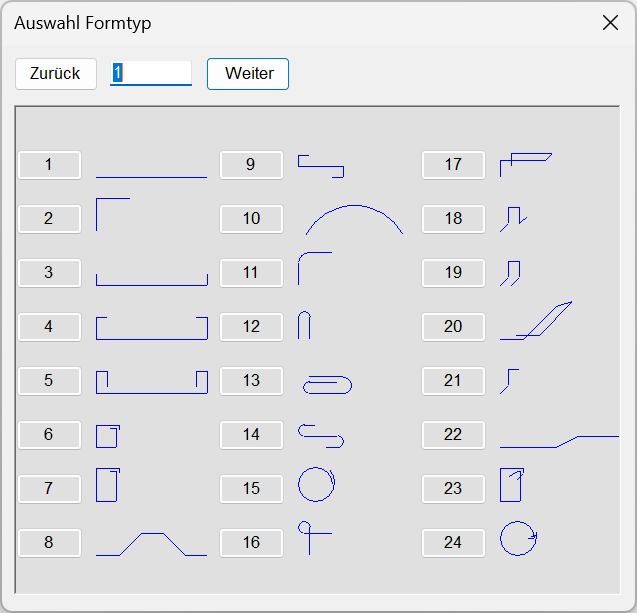
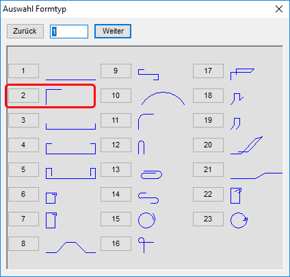

")

Eine Standard-Biegeform aus der hinterlegten Typentabelle übernehmen, Durchmesser und Teillängen definieren und als Auszugsform in der Zeichnung ablegen.
1.Mattentyp und -biegerichtung wählen
§Wählen Sie in der Liste unter Mattentyp den gewünschten Formmattentyp oder bestätigen Sie die Vorauswahl mit der Eingabetaste.
§Geben Sie unter Biegerichtung an, wie die Formmatte gebogen werden soll und bestätigen Sie mit der Eingabetaste.
oder Eingabe 1 |
Die Formmatte wird über die Längsstäbe gebogen (Normalfall) |
oder Eingabe 2 |
Die Formmatte wird über die Querstäbe gebogen (Q-Matten) |
§Geben Sie den Maßstab für die Biegeform an oder übernehmen Sie den vorhandenen Wert und bestätigen Sie mit der Eingabetaste. [Maßstab].
Der Dialog Auswahl Formtyp wird geöffnet.
§Wählen Sie im Dialog Auswahl Formtyp eine Formtyp-Nummer. Die Biegeformen 16 - 21 sowie 23 und 24 können nicht ausgewählt werden.
Die Biegeform wird in Cursorfarbe an den Mauszeiger gehängt.

§Setzen Sie die Biegeform per Mausklick in die Zeichnung. [setzen].
Die Biegeform wird in der Zeichnung angezeigt und bei der weiteren Bearbeitung schrittweise aktualisiert.
2.Teillängen definieren und Biegeform ausrichten
Die Teillängen werden nacheinander abgefragt, die aktuell abgefragte Teillänge ist jeweils in der Zeichnung markiert. Die Bezeichnung der Teillängen in der Abfrage ist abhängig von der gewählten Biegeform.
[LX*] |
Länge in X-Richtung |
[LY*] |
Länge in Y-Richtung |
[LG*] |
Länge |
[WI*] |
Winkel |
[AW*] |
Anfangswinkel |
[EW*] |
Endwinkel |
[HH*] |
Höhe |
[DU*] |
Durchmesser |
[L0*] |
Übergreifungslänge |
[RA*] |
Radius |
§Geben Sie nacheinander für jede markierte Teillänge den gewünschten Parameter ein oder übernehmen Sie den vorhandenen Wert. Bestätigen Sie jede Eingabe mit Rechtsklick oder der Eingabetaste. Mit einem negativen Wert können Sie die Richtung der Teillänge ändern. Wenn eine Teillänge nicht gezeichnet werden soll, geben Sie 0 (Null) ein.
Nach Bestätigung der letzten Teillänge wird die Biegeform wieder an den Cursor gehängt. Sie können sie jetzt noch ausrichten (drehen/spiegeln) oder sofort absetzen.

§Klicken Sie unter Lage auf §Geben Sie die Werte für Drehung und Spiegelung an und bestätigen Sie jeweils mit der Eingabetaste. Sie können die Neigung auch über die Ausrichtungsoptionen P... (parallel) oder O... (orthogonal) angeben. Klicken Sie hierzu eine der Ausrichtungsoptionen an und anschließend ein Bezugselement.
Die Biegeform wird wieder an den Cursor gehängt und kann in der Zeichnung abgesetzt werden. |
§Setzen Sie die Biegeform per Mausklick an die gewünschte Stelle oder bestätigen Sie die aktuelle Lage mit der Eingabetaste oder rechter Maustaste. [Lage].
3.Auszugsform ausrichten und setzen
§Auszugsform drehen/spiegeln (optional): Klicken Sie unter Lage Auszugsform auf  . Geben Sie die Werte für Drehung und Spiegelung an und bestätigen Sie jeweils mit der Eingabetaste.
. Geben Sie die Werte für Drehung und Spiegelung an und bestätigen Sie jeweils mit der Eingabetaste.
Dreh-Winkel: |
Drehung der Biegeform entgegen dem Uhrzeigersinn. (Mit negativem Wert wird im Uhrzeigersinn gedreht.) |
Winkel Spiegelachse: |
Drehung der Spiegelachse entgegen dem Uhrzeigersinn. |
§Setzen Sie die Biegeform per Mausklick an die gewünschte Stelle. [Lage Auszugsform].
Der Auszugstext wird im eingestellten Systemwinkel platziert.
|
Der Auszug wird orthogonal aus der Schalung in Bezug auf den Systemwinkel herausgezogen. Ob senkrecht oder waagerecht, richtet sich nach der Lage des Cursors. Bezugspunkt ist der Anfangspunkt. Liegt der Cursor in einem Sektor zwischen 315° und 45°, wird horizontal nach rechts bewegt, zwischen 225° und 315° nach unten usw. Alternativ: Halten Sie die Umschalttaste (Shift) beim Absetzen gedrückt. |
|
Die Lage des Auszuges wird von der Cursorposition bestimmt. Bezugspunkt ist der Anfangspunkt. |


4.Auszugstext definieren und anlegen
§Geben Sie unter Pos. eine Positionsnummer ein oder übernehmen Sie die Vorauswahl und bestätigen Sie mit der Eingabetaste.
§Um den Auszugstext zu drehen:
Verwenden Sie die Optionen unter Textrichtung oder geben Sie die Drehung in Grad (entgegen der Uhrzeigerrichtung) ein und bestätigen Sie mit der Eingabetaste.
|
Auszugstext parallel zu einem Bezugselement ausrichten. §Klicken Sie die Ausrichtungsoption an und klicken Sie anschließend das Bezugselement an. Bestätigen Sie mit Rechtsklick. Der Auszugstext wird parallel zum angeklickten Zeichenelement ausgerichtet. |
|
Auszugstext orthogonal zu einem Bezugselement ausrichten. §Klicken Sie die Ausrichtungsoption an und klicken Sie anschließend das Bezugselement an. Bestätigen Sie mit Rechtsklick. Der Auszugstext wird orthogonal zum angeklickten Zeichenelement ausgerichtet. |
|
Teillängentext neu positionieren. §Klicken Sie einen Teillängentext mit Linksklick an und positionieren Sie diesen an einer anderen Stelle. Der Auszugstext wird am Cursor als Vorschau angehängt. |


§Richten Sie den Auszugstext aus, indem Sie den gewünschten Winkel eingeben und bestätigen oder eine Konstruktionshilfe wählen. Der Auszugstext wird am Cursor als Vorschau angehängt. Wenn Sie die Position des Auszugstextes aus der Abfrage Lage Auszugsform beibehalten möchten, drücken Sie die Eingabetaste oder klicken Sie die rechte Maustaste.
5.Verlegung für Biegeform erzeugen
§Wählen Sie unter gewählt, ob mit der Biegeform eine Verlegung (Formdarstellung) gezeichnet werden soll:
|
Die Biegeform wird lediglich als Auszug (ohne Verlegung) gezeichnet. Sie kann als Vorlage für spätere Verlegungen verwendet werden. (Stückzahl und Durchmesser sind im Auszugstext mit ? belegt.) Die Bearbeitung ist abgeschlossen; Sie können sofort die nächste Biegeform (aus der Typentabelle) erzeugen. [Mattentyp]. |
|
Die Bewehrungsform wird mit Verlegung angelegt; Die Stückzahl muss im Folgenden definiert werden. Beachten Sie die Eingabeeinheit (vgl. Untere Menüleiste → Eingabe). §Geben Sie den Matten-Typ an oder wählen Sie einen Typ aus der Dropdown-Liste mit Linksklick aus. [Matten-Typ]. §Geben Sie die maximale Verlege- bzw. Mattenbreite, den Abstand zwischen den Matten sowie die Verlegetiefe an. Bestätigen Sie jeweils mit der Eingabetaste. Mit Rechtsklick können Sie den in der Eingabe stehenden Wert übernehmen. |
|
Die Biegeform wird mit Verlegung angelegt (Stückzahl = 0). Die Bearbeitung ist abgeschlossen; Sie können sofort die nächste Biegeform erzeugen oder die Form verlegen. [Mattentyp]. |


Beispiel:
Es soll ein Eckwinkel erzeugt werden. Wählen Sie für das folgende Beispiel eine Betondeckung mit nom c= 2.5 cm.
1.Mattentyp und -biegerichtung wählen
§Wählen Sie in der Liste unter Mattentyp den gewünschten Formmattentyp oder bestätigen Sie die Vorauswahl mit der Eingabetaste.
§Übernehmen Sie den Vorschlag 1=längs mit Rechtklick. [Biegerichtung].
Damit wird der Längsstab zur festen Länge und bei der späteren Verlegung kann nur noch eine Breite von max. 2.15 m (bei Lagermatten) eingegeben werden.
|
Die Formmatte wird über die Längsstäbe gebogen (Normalfall) |
§Geben Sie für den Maßstab den Wert 25 ein und bestätigen Sie mit der Eingabetaste. [Maßstab].
Der Dialog Auswahl Formtyp wird geöffnet.
§Wählen Sie im Dialog Auswahl Formtyp die Formtyp-Nummer 2.
Die Biegeform wird in Cursorfarbe an den Mauszeiger gehängt.

§Setzen Sie die Biegeform per Mausklick in die Zeichnung. [setzen].
Die Biegeform wird in der Zeichnung angezeigt und bei der weiteren Bearbeitung schrittweise aktualisiert.
2.Teillängen definieren und Biegeform ausrichten
Die Teillängen werden nacheinander abgefragt, die aktuell abgefragte Teillänge ist jeweils in der Zeichnung markiert.
[LY*] |
Länge in Y-Richtung |
[LX*] |
Länge in X-Richtung |
§Geben Sie für die Länge in Y-Richtung den Wert .8 ein und bestätigen Sie mit der Eingabetaste. [LY1].
§Geben Sie für die Länge in X-Richtung den Wert 1.2 ein und bestätigen Sie mit der Eingabetaste. [LX2].
Nach Bestätigung der letzten Teillänge wird die Biegeform wieder an den Cursor gehängt. Wenn Sie die Biegeform in einen konkreten Querschnitt hineinlegen können, schieben Sie die Verlegeform an die Stelle und platzieren Sie die Form mit Linksklick. Dieses kann dann später mit den erforderlichen Parametern belegt werden. Dadurch ersparen Sie sich einen erneuten Aufruf der Form.
§Setzen Sie die Biegeform per Mausklick an der gewünschten Stelle mit Linksklick ab. [Lage].
3.Auszugsform setzen
§Setzen Sie die Auszugsform per Mausklick an der gewünschten Stelle ab. [Lage Auszugsform].
4.Auszugstext definieren und anlegen
§Geben Sie unter Pos. eine Positionsnummer ein oder übernehmen Sie die Vorauswahl und bestätigen Sie mit der Eingabetaste.
§Geben Sie den Wert 0 für die Textrichtung ein und bestätigen Sie mit der Eingabetaste. Der Auszugstext wird an den Cursor gehängt.
Alternativ können Sie auch die Schaltfläche [0°] anklicken (Abfrage springt weiter).
§Legen Sie den Auszugstext an einer beliebigen Stelle mit einem Linksklick ab. [Lage Auszugstext].
Wenn Sie die Position des Auszugstextes aus der Abfrage Lage Auszugsform beibehalten möchten, drücken Sie mit der Eingabetaste oder klicken Sie die rechte Maustaste.
5.Verlegung später darstellen
§Wählen Sie 1= Verlegung nicht darstellen. um die Verlegung zu einem späteren Zeitpunkt vorzunehmen. [gewählt]
|
Die Biegeform wird lediglich als Auszug (ohne Verlegung) gezeichnet. Sie kann als Vorlage für spätere Verlegungen verwendet werden. (Stückzahl und Durchmesser sind im Auszugstext mit ? belegt.) üDie Bearbeitung ist abgeschlossen; Sie können sofort die nächste Biegeform (aus der Typentabelle) erzeugen. [Mattentyp]. |
Siehe auch: